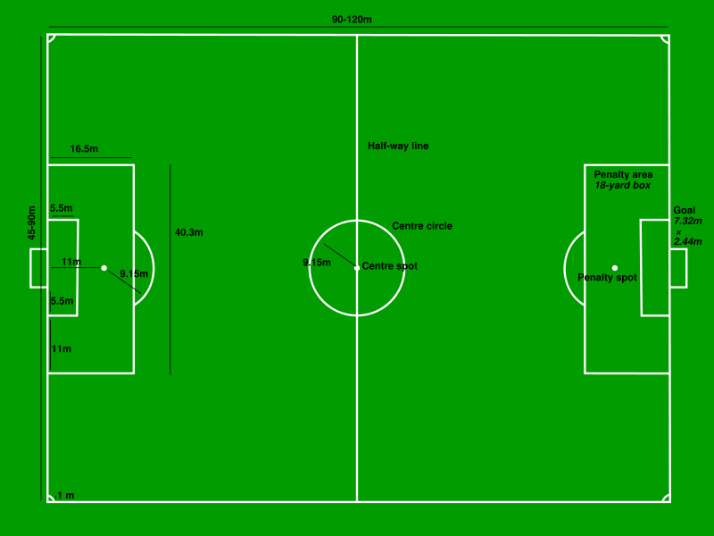
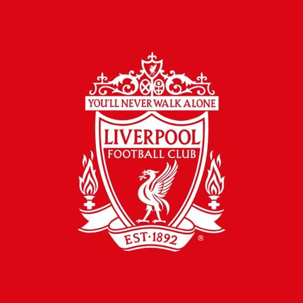
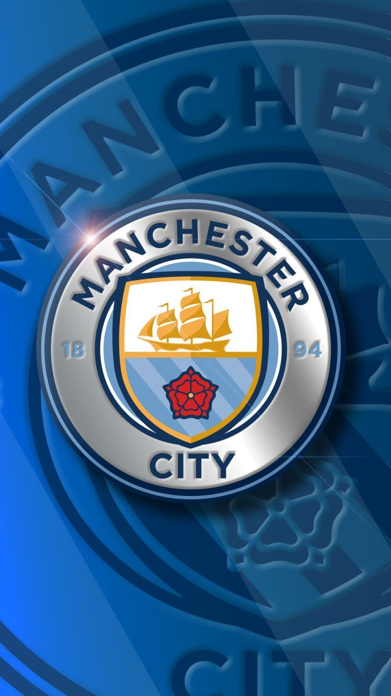
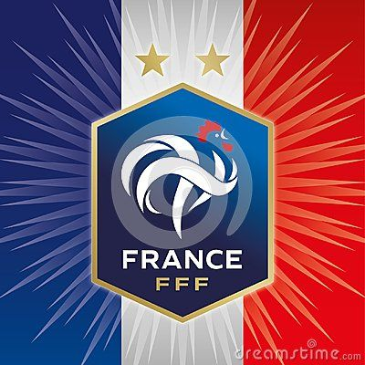
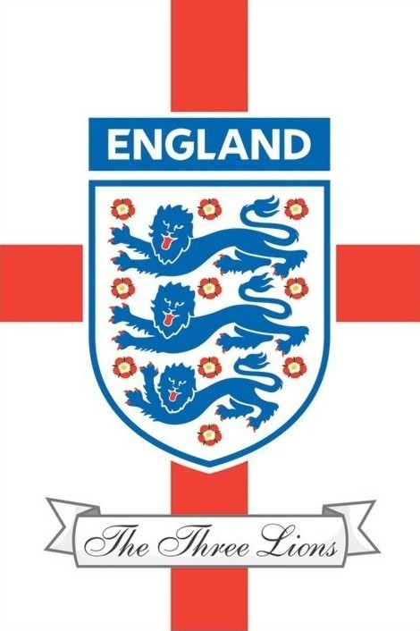

football, also called association football or soccer, game in which two teams of 11 players, using any part of their bodies except their hands and arms, try to maneuver the ball into the opposing team’s goal. Only the goalkeeper is permitted to handle the ball and may do so only within the penalty area surrounding the goal. The team that scores more goals wins. Football is the world’s most popular ball game in numbers of participants and spectators. Simple in its principal rules and essential equipment, the sport can be played almost anywhere, from official football playing fields (pitches) to gymnasiums, streets, school playgrounds, parks, or beaches. Football’s governing body, the Fédération Internationale de Football Association (FIFA), estimated that at the turn of the 21st century there were approximately 250 million football players and over 1.3 billion people “interested” in football; in 2010 a combined television audience of more than 26 billion watched football’s premier tournament, the quadrennial month-long World Cup finals. For a history of the origins of football sport, see football.
Football is played in accordance with a set of rules, known as the Laws of the Game. The game is played using a single round ball (the football) and two teams of eleven players each compete to get the ball into the other team's goal, thereby scoring a goal. The team that has scored more goals at the end of the game is the winner; if both teams have scored an equal number of goals, then the game is a draw. There are exceptions to this rule, however; see Duration and tie-breaking methods below.
The primary rule is that the players (other than the goalkeepers) may not intentionally touch the ball with their hands or arms during play (though they do use their hands during a throw-in restart). Although players usually use their feet to move the ball around, they may use any part of their bodies other than their hands or arms.
In typical game play, players attempt to propel the ball toward their opponents' goal through individual control of the ball, such as by dribbling, passing the ball to a team-mate, and by taking shots at the goal, which is guarded by the opposing goalkeeper. Opposing players may try to regain control of the ball by intercepting a pass or through tackling the opponent who controls the ball; however, physical contact between opponents is limited. Football is generally a free-flowing game, with play stopping only when the ball has left the field of play, or when play is stopped by the referee. After a stoppage, play recommences with a specified restart.
At a professional level, most matches produce only a few goals. For example, during the English 2005-06 season of the FA Premier League, an average of 2.48 goals per match were scored.
Modern football originated in Britain in the 19th century. Since before medieval times, “folk football” games had been played in towns and villages according to local customs and with a minimum of rules. Industrialization and urbanization, which reduced the amount of leisure time and space available to the working class, combined with a history of legal prohibitions against particularly violent and destructive forms of folk football to undermine the game’s status from the early 19th century onward. However, football was taken up as a winter game between residence houses at public (independent) schools such as Winchester, Charterhouse, and Eton. Each school had its own rules; some allowed limited handling of the ball and others did not. The variance in rules made it difficult for public schoolboys entering university to continue playing except with former schoolmates. As early as 1843 an attempt to standardize and codify the rules of play was made at the University of Cambridge, whose students joined most public schools in 1848 in adopting these “Cambridge rules,” which were further spread by Cambridge graduates who formed football clubs. In 1863 a series of meetings involving clubs from metropolitan London and surrounding counties produced the printed rules of football, which prohibited the carrying of the ball. Thus, the “handling” game of rugby remained outside the newly formed Football Association (FA). Indeed, by 1870 all handling of the ball except by the goalkeeper was prohibited by the FA.

Due to the original formulation of the Laws in England and the early supremacy of the four British football associations within IFAB, the standard dimensions of a football pitch were originally expressed in imperial units. The Laws now express dimensions with approximate metric equivalents (followed by traditional units in brackets), though popular use tends to continue to use traditional units. The length of the rectangular field (pitch) specified for international adult matches is in the range 100-110 metres (110-120 yd) and the width is in the range 65-75 metres (70-80 yd). Fields for non-international matches may be 100-130 yards length and 50-100 yards in width, provided that the pitch does not become square. The longer boundary lines are touchlines or sidelines, while the shorter boundaries (on which the goals are placed) are goal lines. On the goal line at each end of the field a rectangular goal is centred. The inner edges of the vertical goal posts must be 8 yards (7.32 m) apart, and the lower edge of the horizontal crossbar supported by the goal posts must be 8 feet (2.44 m) above the ground. Nets are usually placed behind the goal, but are not required by the Laws. In front of each goal is an area of the field known as the penalty area (colloquially "penalty box", "18-yard box" or simply "the box"). This area is marked by the goal-line, two lines starting on the goal-line 18 yards (16.5 m) from the goalposts and extending 18 yards into the pitch perpendicular to the goal-line, and a line joining them. This area has a number of functions, the most prominent being to mark where the goalkeeper may handle the ball and where a penal foul by a member of the defending team becomes punishable by a penalty kick. The field has other field markings and defined areas.



